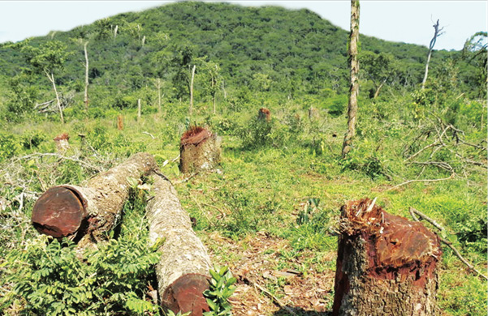

Deforestation
Overuse of firewood and charcoal as sources of energy, contributes to the destruction of the environment. Cutting down trees for firewood and charcoal making causes the destruction of forests. It leads to the areas that were previously covered with trees to be bare. Bare land can be eroded and eventually lose its fertility. Figure 5 shows the destruction of a forest through the cutting down of trees.

The burning of forests is also a source of environmental destruction. Forests provide habitats for living organisms such as butterflies, birds, elephants, snakes, monkeys, lions and leopards.